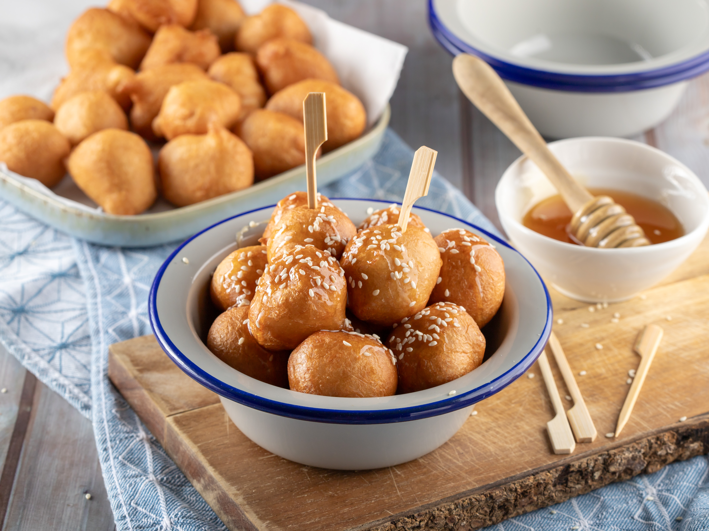

Home
Loukoumades

Description
No one will believe that you made these Greek-style donuts with only 2 ingredients! Crispy on the outside and fluffy on the inside, these “loukoumades” are definitely a must-try!
Ingridients
- 400g sunflower oil
- 480g self-rising flour
- 500g orange soft drink
- honey
- walnuts
- cinnamon
Steps
- Place a frying pan over medium heat, add the sunflower oil, and let it heat up well.
- Put the flour and orange soft drink into a bowl, and mix them well with a spoon until you have a smooth batter.
- Spread some paper towels on a baking pan and place the pan next to your frying pan.
- Take some batter with your hand and squeeze it in your palm so that a little of the batter will come out between your thumb and index finger
- Dip a teaspoon in sunflower oil and use it to take the batter that comes out between your fingers, and transfer it to the pan. Each time, add 10-15 donuts to the pan as they should be cooked evenly.
- Fry the donuts for 2-3 minutes, until they are nicely golden, by occasionally dipping them into the oil with the back of a slotted spoon to cook them through.
- Use the slotted spoon to remove the donuts from the pan and transfer them to the baking pan with the paper towels.
- Follow the same process for the rest of the batter.
- Serve the Greek donuts with honey, walnuts, and cinnamon.